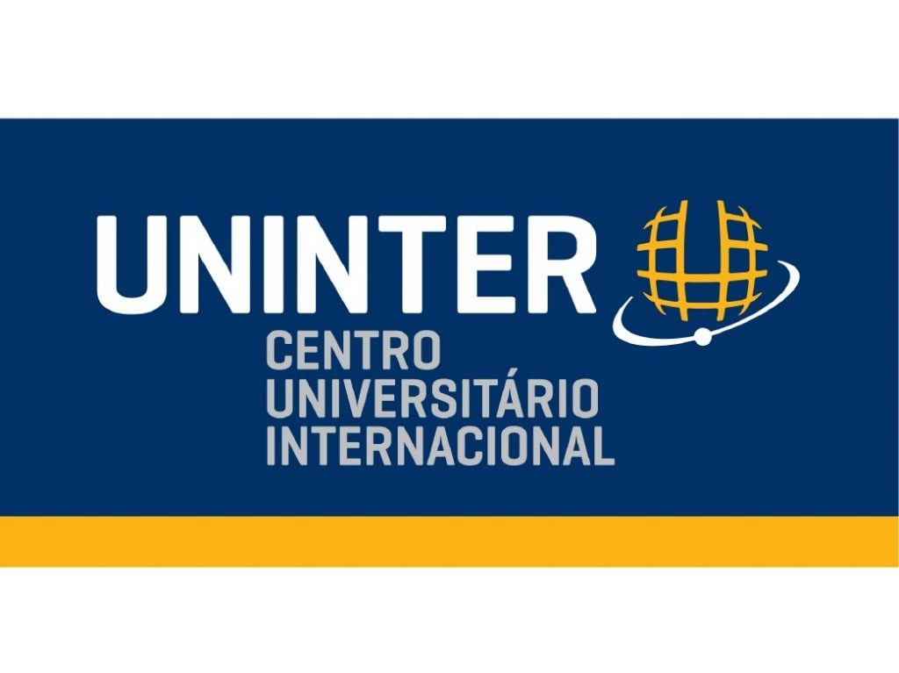
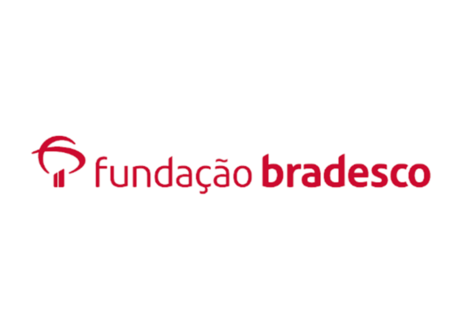

ADS – Analise e Desenvolvimento de Sistema (UNINTER – 2023/Andamento)
O curso de Análise e Desenvolvimento de Sistemas a distância da Uninter adquirem conhecimentos sólidos em linguagem de programação, engenharia de software, segurança da informação, entre outros. Os futuros analistas de sistemas aprendem a desenvolver aplicativos, sistemas web e mobile, além de dominar as mais recentes tecnologias e metodologias de desenvolvimento.

Curso de pacote Office Word, Excel e PowerPoint - Intermediarip (Fundação Bradesco - 2022/Finalizado)
No Word, podemos criar qualquer tipo de documento que envolva textos, quadrinhos, revistas, panfletos, jornais, etc. Além disso, você pode enriquecer o seu documento, utilizando tabelas, gráficos, imagens, índices e muitos outros recursos.
Podemos criar e formatar planilhas e gráficos no Excel, até a trabalhar com funções financeiras, estatísticas e funções aninhadas, de maneira que o raciocínio seja aprimorado para situações mais complexas.
De forma simples, editar e gerenciar apresentações no PowerPoint, trabalhando com elementos gráficos, aplicando efeitos de animação e transição de slides, entre outras ações.

Curso de Mecânico de Manutenção – Profissionalizante (SENAI – 2019/Finalizado)
Faço a manutenção corretiva e planejada de máquinas industriais. Mecânico de Manutenção tem por objetivo proporcionar qualificação profissional para realizar a manutenção mecânica de máquinas, equipamentos e instalações, tendo em vista o aumento da confiabilidade do processo produtivo, em conformidade às normas e procedimentos de saúde e segurança no trabalho, de meio ambiente e de qualidade.